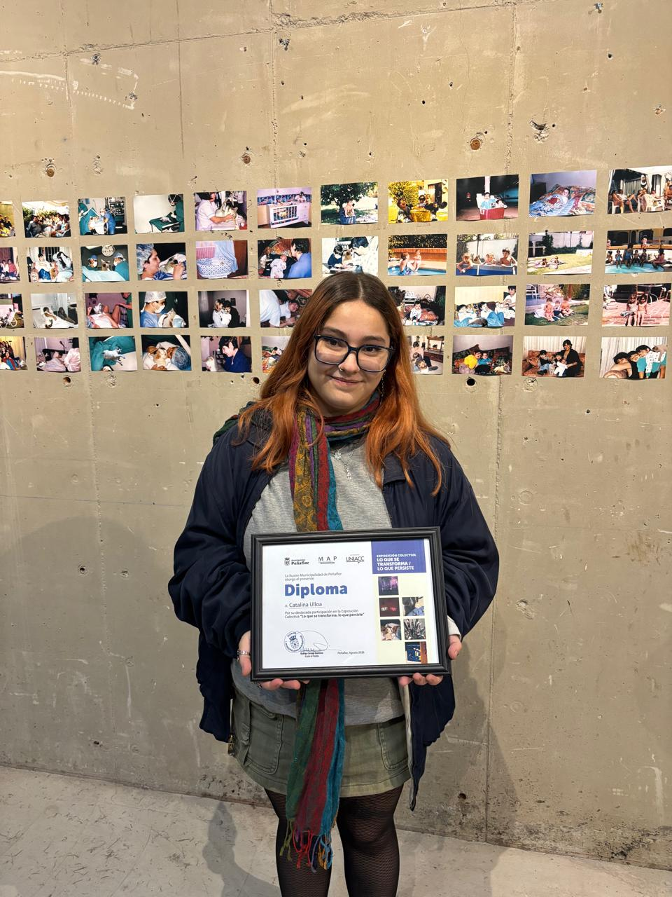
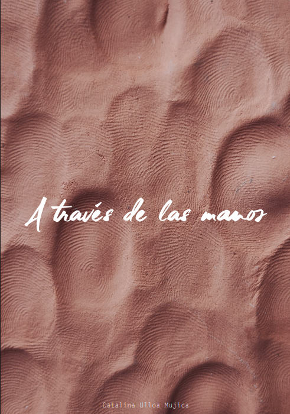

Catalina Ulloa Mujica
Nací en Viña del Mar en 2001 y a los cinco años me mudé a Santiago con mi familia: mis papás y mis dos hermanos mayores.
Durante gran parte de mi vida no tuve una conexión real con el arte, más allá de dibujar o pintar de vez en cuando. Fue en mi penúltimo año de colegio cuando logré integrarme al mundo del arte.
Empecé por la fotografía y, de a poco, me fui adentrando en otras técnicas: el grabado en linóleo, la acuarela y el dibujo digital
A lo largo de mi carrera en la Universidad UNIACC descubrí una conexión muy fuerte con la arcilla. Sus posibilidades y la libertad de experimentar con ella me llevaron a basar la mayoría de mis trabajos universitarios,en distintos ramos, en este material.
Lo he abordado desde varios puntos: a veces desde la experimentación, otras desde la representación, trabajando la identidad y los rasgos y facciones, y últimamente desde la hibridación entre animal y humano.
La hibridación es un tema que ha estado presente en mi interés por el arte desde siempre, solo que la he ido desarrollando de a poco, en distintos momentos.
Es con este interés que me veo motivada a trabajar los proximos años, poder llegar a crear mis propios personajes los cuales sean creados completamente desde la imaginación y la experimentación

Libro · 2025 · Exposición Ksa8
Publicación creada para exposición en Ksa8 "El Gran Cuaderno"..
Correo
cataulloamujica@gmail.com